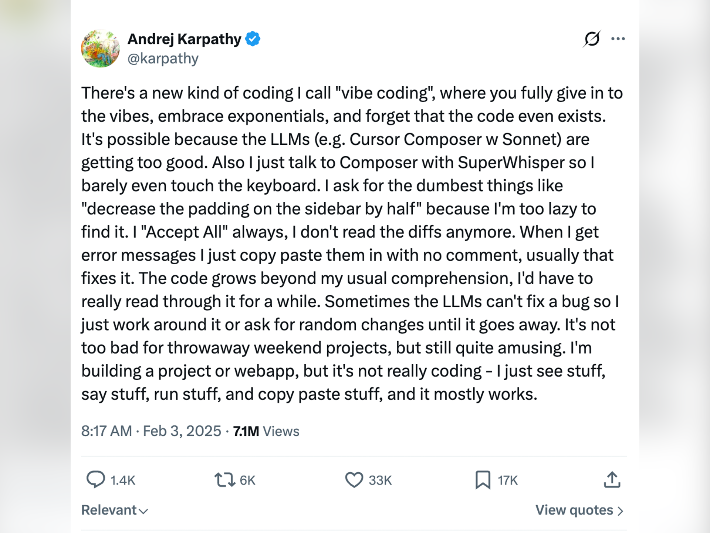
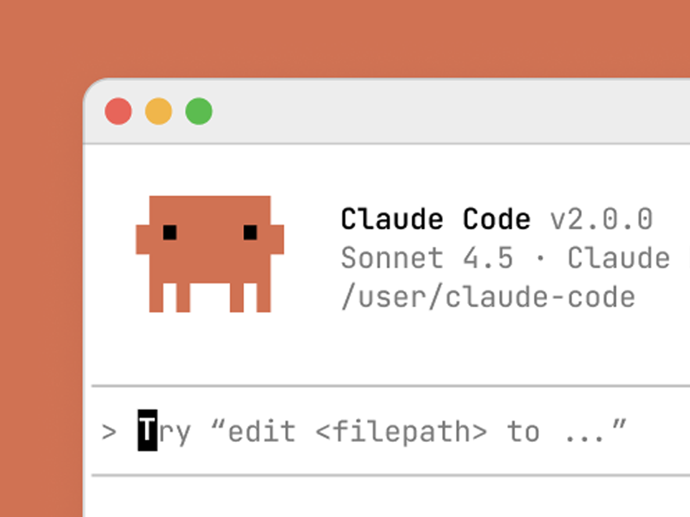
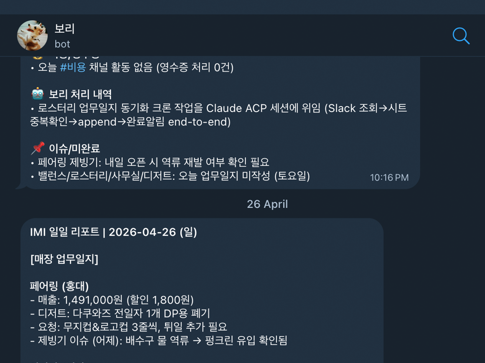
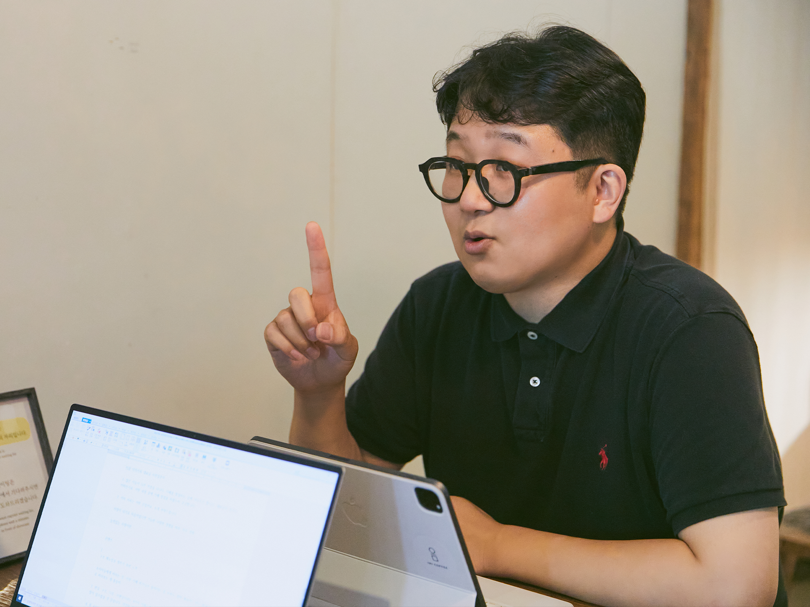

코딩을 넘어 일터 전반을 바꾸는 AX(AI Transformation)의 물결
개발자 없는 자동화가 불러온 ‘바이브 코딩’의 시대
LONGBLACK SPECIAL REPORT
AI / VIBE CODING / AX TRANSFORMATION
바이브 시대 —
카페사장이
AI와 공존하는 법
카페사장이
AI와 공존하는 법

"코드를 직접 타이핑하던 시대는 끝났다"
— 안드레 카파시가 엑스에 올린 '바이브 코딩' 선언
— 안드레 카파시가 엑스에 올린 '바이브 코딩' 선언
01 / 06
THE SHIFT
비개발자의 장벽 붕괴,
빌더(Builder)의 탄생
빌더(Builder)의 탄생
2025년 2월, 앤트로픽의 '클로드 코드(Claude Code)' 출시로 판도가 바뀌었습니다. 자연어로 명령하면 컴퓨터 속 파일과 브라우저를 직접 다루며 코드 작성·수정·실행까지 수행하는 '손발 달린 AI'가 등장한 것이죠.
이제 기획, 디자인, 개발이 한 사람에게 집중됩니다. 포춘 10대 기업 8곳이 이미 클로드를 채택하며 업무 환경의 대변환(AX)을 맞이하고 있습니다.
이제 기획, 디자인, 개발이 한 사람에게 집중됩니다. 포춘 10대 기업 8곳이 이미 클로드를 채택하며 업무 환경의 대변환(AX)을 맞이하고 있습니다.

자연어 명령으로 시스템을 제어하는 클로드 코드 에이전트
02 / 06
AX FRAMEWORK
바이브 경영의 핵심 2원칙
#1
장기 기억: 맥락을 잇는 일하기
영수증 분류부터 매출 보고까지. 업무를 옵시디언 등 마크다운으로 자동 기록하여 과거의 맥락을 언제든 소환할 수 있는 시스템 구축.
#2
주의력 지키기: 의지력 절약 환경 설계
매일 아침 '보리' 같은 업무 봇에게 '/morning' 한 줄을 입력하면, 일정, 메일, 미팅 준비가 자동으로 브리핑됩니다. 단순 반복 행정 업무에 소모되는 의지력을 40% 이상 절감합니다.

자체 업무 봇 ‘보리’가 메일로 보내온 일일 카페 운영 보고서
03 / 06
CASE STUDY: F&B
카페 사장의
전면 자동화 실험
전면 자동화 실험
15년간 카페(이미커피)를 운영해 온 이림 대표는 바이브 코딩을 카페 운영 전반에 적용했습니다.
부가세 영수증 자동 분류, 급여 변동 자동 요청, 매일 저녁 매출 보고 자동화까지. 소규모 리테일 사업자에게도 즉각적인 ROI를 증명하며, 이 모델을 바탕으로 한 ‘버티컬 AX 에이전시’ 신사업의 가능성을 보여줍니다.
부가세 영수증 자동 분류, 급여 변동 자동 요청, 매일 저녁 매출 보고 자동화까지. 소규모 리테일 사업자에게도 즉각적인 ROI를 증명하며, 이 모델을 바탕으로 한 ‘버티컬 AX 에이전시’ 신사업의 가능성을 보여줍니다.
"AI를 제대로 활용하려면, AI가 내 일상에 침투하는 관여도를 높여보라."
— 이림 · 이미커피 대표

자동화된 환경에서 맥락이 쌓이는 ‘바이브 경영’을 실천하는 이림 대표
04 / 06
CASE STUDY: ENTERPRISE
조직 단위의
AX 프론티어 확산
AX 프론티어 확산
일룸은 ‘AX 프론티어 그룹’을 꾸려, 6주간 클로드 코드로 업무를 체계화하는 법을 실험했습니다. 그 결과, 온라인 영업 조직은 AI가 라이브 커머스 댓글을 자동 수집·분류하고 FAQ를 생성하는 웹앱을 직접 만들어냈습니다.
사내 사이트를 통해 '배너 생성기', '세일즈 챗봇' 등 직원들이 직접 만든 AI 도구와 프롬프트를 전파하며, 개인의 능숙함을 넘어선 '조직 전체의 생산성 혁명'을 이루어 내고 있습니다.
사내 사이트를 통해 '배너 생성기', '세일즈 챗봇' 등 직원들이 직접 만든 AI 도구와 프롬프트를 전파하며, 개인의 능숙함을 넘어선 '조직 전체의 생산성 혁명'을 이루어 내고 있습니다.

비개발자 직원들이 만들어낸 일룸 AX 컨설팅 성과 발표회 현장
05 / 06
WARNING
THE RISK
AI 슬롭(Slop)과
가짜 노동의 경계
가짜 노동의 경계
대충 얘기해도 최선을 다해 결과물을 만들어 내는 AI는 위험한 착각을 줍니다. 알맹이 없는 콘텐츠가 범람하는 'AI 슬롭' 현상이 심화되고 있죠.
따라서 전문가의 '날카로운 취향과 기준'이 더욱 중요해집니다. "어떻게(How)"는 AI가 가져갔습니다. 이제 "무엇을·왜(What·Why)" 해야 할지 프레임 자체를 지시하는 자가 살아남습니다.
따라서 전문가의 '날카로운 취향과 기준'이 더욱 중요해집니다. "어떻게(How)"는 AI가 가져갔습니다. 이제 "무엇을·왜(What·Why)" 해야 할지 프레임 자체를 지시하는 자가 살아남습니다.
“결과를 가려낼 날카로운 취향과 기준이 필요하다” - 김주호 교수
06 / 06
CONCLUSION
명사가 아닌 동사로
나를 정의하라.
나를 정의하라.
"커피를 하는 사람(명사)"이 아닌 "경험을 선물하는 일을 하는 사람(동사)"
바이브 시대의 생존 역량은 결국
정의(나는 누구인가) + 의도(무엇을 하는가) + 의지(끝까지 밀어붙이는가)
바이브 시대의 생존 역량은 결국
정의(나는 누구인가) + 의도(무엇을 하는가) + 의지(끝까지 밀어붙이는가)
SOURCE · LONGBLACK.CO/NOTE · 바이브의 시대 (2026.04)
AI 신사업 위키 · Wiki-Pages/Longblack-Coffee-Insight
06 / 06